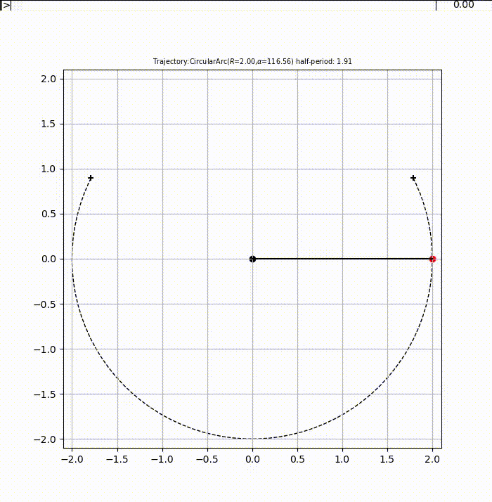

IPYDEMO.odesimu — Dynamical system simulation
This module provides basic utilities to build system simulations based on ordinary differential equations (ODE).
An example
We want to simulate the motion of a simple pendulum. The pivot of the pendulum is attached to a fixed point while the bob concentrates all the mass at a constant distance \(l\) from the pivot. The pendulum is submitted to a constant, uniform gravity field \(g\) oriented downwards, and frictions are ignored. The physical state of this system is entirely represented by the angle \(\theta\) of the pendulum with the downward vertical axis, and its temporal derivative \(\dot{\theta}\). The equation of this elementary oscillator is given by
The following program implements the corresponding simulation.
# File: demo/odesimu.py
# Contributors: Jean-Marc Andreoli
# Language: python
# Purpose: Illustration of the odesimu subpackage
from make import RUN; RUN(__name__,__file__,2)
#--------------------------------------------------------------------------------------------------
import subprocess
from collections import namedtuple
from enum import Enum
from numpy import array,square,sqrt,cos,sin,arccos,arcsin,degrees,radians,pi,isclose
from myutil.simpy import SimpySimulation
from ..odesimu import System
Trajectory = namedtuple('Trajectory','periodicity alpha T name display')
Periodicity = Enum('Periodicity','Aperiodic Periodic IncrementalPeriodic')
class Pendulum (System):
def __init__(self,L,G): self.L,self.G,self.a = L,G,G/L
def fun(self,t,state): # required
theta,dtheta = state
return array((dtheta,-self.a*sin(theta)))
def jac(self,t,state): # optional
theta,dtheta = state
return array(((0,1),(-self.a*cos(theta),0)))
@staticmethod
def makestate(theta,dtheta=0.): # required
return radians((theta, dtheta))
def displayer(self,env,ax,refsize=None): # required
trajectory = self.trajectory(env.init_y)
ax.set_title(f'trajectory:{trajectory.name}',fontsize='x-small')
L = 1.05*self.L
ax.set(xlim=(-L,L),ylim=(-L,L))
ax.scatter((0.,),(0.,),c='k',marker='o',s=refsize)
trajectory.display(ax)
a_pole, = ax.plot((),(),'k')
a_bob = ax.scatter((),(),s=refsize,marker='o',c='r')
a_tail, = ax.plot((),(),'y')
def disp():
x,y = self.cartesian(env.state)
a_pole.set_data((0,x),(0,y))
a_bob.set_offsets(((x,y),))
a_tail.set_data(*self.cartesian(env.cached_states))
return disp
def cartesian(self,state):
theta,dtheta = state
return self.L*array((sin(theta),-cos(theta)))
def trajectory(self,init_y): # precomputes the trajectory
from scipy.integrate import quad
theta,dtheta = init_y
E = .5*square(dtheta)-self.a*cos(theta)
c = -E/self.a
if isclose(c,-1):
periodicity = Periodicity.Aperiodic; name = 'aperiodic'; T = None; α = pi
else:
if c<-1: periodicity = Periodicity.IncrementalPeriodic; name = 'incremental period'; α = pi
else: periodicity = Periodicity.Periodic; name = 'half-period'; α = arccos(c)
T = pi/sqrt(2) if isclose(α,0.) else quad((lambda θ,c=c: 1/sqrt(cos(θ)-c)),0,α)[0]
T *= sqrt(2/self.a)
name = f'{name}: {T:.2f}'
name = f'CircularArc($R={self.L:.2f}$,$\\alpha={degrees(α):.2f}$) {name}'
def display(ax):
from matplotlib.patches import Arc
ax.set_title(f'Trajectory:{name}',fontsize='x-small')
ax.scatter(*zip(*map(self.cartesian,((-α,0),(α,0)))),marker='+',c='k')
ax.add_patch(Arc((0,0),2*self.L,2*self.L,-90,-degrees(α),degrees(α),color='k',ls='dashed'))
return Trajectory(periodicity,α,T,name,display)
def demo():
from matplotlib.pyplot import show,close
syst = Pendulum(L=2.,G=9.81)
R = SimpySimulation(
syst.launch(init_y=dict(theta=90.,dtheta=120.),period=10.,cache=(10,.05),max_step=.05),
play_kw=dict(track=[6.],frame_per_stu=25,fig_kw=dict(figsize=(7,7)),save_count=150),
)
def action():
for a in 'get_size_inches','set_size_inches','savefig': setattr(R.player.board,a,getattr(R.player.main,a)) # very ugly trick because board is a subfigure
R.player.anim.save(str(RUN.dir/'odesimu.mp4'))
subprocess.run(['ffmpeg','-loglevel','panic','-y','-i',str(RUN.dir/'odesimu.mp4'),str(RUN.dir/'odesimu.gif')])
close()
RUN.play(action)
show()
The behaviour of the system is captured by class Pendulum, which extends class odesimu.System. The following methods must be provided:
fun, which defines the ODE of the system,
makestate, which converts a user friendly state specification into an actual state
displayer, which takes as input an ODE environment (instance of
ODEEnvironment) as well as a plot axes (instance ofmatplotlib.Axes) and returns the function which displays the ODE environment onto the plot axes.
Method jac is optional. It defines the Jacobian of the ODE, which some ODE solvers can use for optimisation purposes. It is given here, as it is straightforward to compute.
Method displayer performs the following steps:
apply various configurations to ax, which is an instance of matplotlib.axes.Axes: here, set the limits and the title, and draw the pivot and trajectory of the bob, as, in this simple example, it can easily be computed;
define the matplotlib artists, initially empty, capturing the dynamic components of the simulation: here a_pole (pendulum’s pole as a straight line segment), a_bob (pendulum’s bob as a single point) and a_tail (tail of the bob, i.e. buffered previous positions of the bob, as a curve);
define the display refresher function disp invoked each time a new system state is computed by the ODE solver: it updates the dynamic components of the simulation.
Typical output:
{kind=link}

Available types and functions
- class IPYDEMO.odesimu.core.ODEEnvironment(period=None, cache=None, init_t=0.0, init_y=None, **spec)[source]
Bases:
RobustEnvironmentAn instance of this class represents an abstract dynamical systems (in physics, electronics, hydraulics etc.) governed by an ordinary differential equation (ODE):
\[\begin{array}{rcl} \frac{\mathbf{d}y}{\mathbf{d}t} & = & F(t,y) \end{array}\]where \(t\) is the simulation time and \(y\) is the state. The ODE numerical solver used is taken from module
scipy.integratewhich assumes the state is anumpy.arrayinstance or a scalar.The initial simulation time and state are given by init_t and init_y, respectively. The ODE is solved iteratively on successive, contiguous intervals given by period, the simulation period generator, which generates the spans of the intervals.
If period is a
floatinstance, the interval spans are constant equal to periodIf period is an immutable iterable of
floatinstances, the interval spans are taken to be these numbersOtherwise, period must be a generator of
floatinstances
Various specifications of the ODE are passed through spec to function
scipy.integrate.solve_ivp(). At least function \(F\) must be passed as keyword argumentfun.The cache specification cache is either
None, in which case no caching is performed, or a pair of the cache length and the cache period, independent of the simulation period generator. The cache contains the states sampled at a sequence of decreasing multiples of the cache period. The size of the sequence is chosen so that at any time in the current simulation span, the sequence clipped above at that time has length at least equal to the cache length, unless the initial time is reached before.- Parameters:
init_t (float) – initial simulation time
init_y (ndarray) – initial simulation state
period (Union[float, Iterable[float], Callable[[], float]]) – period of ODE resolution
cache (ndarray) – cache specification
ka – dictionary of arguments passed to the ODE solver
- Exception
alias of
ODEException
- statef: Callable[[float], ndarray]
Current function of simulation time returning state
- state: ndarray
State at the current instant of the simulation
- cache_length: int
Expected length of cache
- cache_period: float
Cache sampling period
- cache_last: int
Index of the last cached state
- cache: ndarray
The cache itself (the time axis is the last axis)
- init_y: ndarray
Initial state
- run(until=None)[source]
Executes
step()until the given criterion until is met.If it is
None(which is the default), this method will return when there are no further events to be processed.If it is an
Event, the method will continue stepping until this event has been triggered and will return its value. Raises aRuntimeErrorif there are no further events to be processed and the until event was not triggered.If it is a number, the method will continue stepping until the environment’s time reaches until.
- property cached_states
States of a sequence of states at previous instants in the simulation
- class IPYDEMO.odesimu.core.System[source]
Bases:
objectInstances of this class gather information for a simulation as implemented by class
myutil.simpy.SimpySimulation.- factory
alias of
ODEEnvironment
- fun = None
(required) Function \(F\) to use in the ODE \(\frac{\mathbf{d}y}{\mathbf{d}t}=F(t,y)\)
- jac = None
(optional) Jacobian of the function of the ODE
- makestate(*a, **ka)[source]
Returns a state computed from its arguments. This implementation raises an error and must be overridden in subclasses or at the instance level.
- displayer(env, part_spec, **ka)[source]
Returns a default displayer function which, on invocation, displays the current state of the environment env on the board part specified by part_spec. The display can be fine-tuned by keyword arguments ka, which can be specified as a dictionary in the last positional argument of method
launch().
- launch(*displayers, hooks=(), init_y=None, **ka)[source]
Returns a tuple comprising an instance of class
ODEEnvironmentand various environment displayers, as expected bymyutil.simpy.SimpySimulation.The ODE is specified by attributes
funandjactogether with the other arguments in ka (the value of keyinit_yis first passed to methodmakestate()as keyword arguments if it is a dictionary, otherwise as positional arguments).The displayers are given by displayers; if its last element is a dictionary, it is replaced by the default displayer with that dictionary as keyword arguments, otherwise the default displayer is appended
- IPYDEMO.odesimu.util.buffered(T=None, N=None, page=0)[source]
- Parameters:
T (int) – size of the buffer page
N (int) – number of samples taken over each page
page (int) – the index of the initial leftmost buffer page
A functor (decorator) which allows limited buffering of a function over the reals. The set of reals is partitioned into contiguous intervals of length T called pages. Page 0 starts at 0. At any time, two adjacent pages are kept in a buffer, starting with page on the leftmost side. For each buffer page, the values of the function over that page are pre-computed at N equidistant samples. This form of buffering is useful when successive invocations of the function tend to stay within the same page, and the page change rate is lower than the invocation rate. Three cases may occur on an invocation:
If the argument is within the buffer, the result is computed by interpolation from the pre-computed values.
If the argument is in the page which is immediately right-adjacent (resp. left-adjacent) to the buffer, the buffer is shifted one page rightward (resp. leftward) to include the argument and the old leftmost (resp. rightmost) page is dropped.
Otherwise the buffer is entirely reset to include the argument in its rightmost (resp. leftmost) page, depending on whether the argument is on the left (resp. right) of the current buffer.
- IPYDEMO.odesimu.util.blurred(level=None, offset=0.0, chunk=1000, _ident=<function <lambda>>)[source]
- Parameters:
level (float) – the degree of blurring, as a positive number
offset – centre of blurring
chunk (int)
A functor (decorator) which applies a multiplicative noise to a function. The multiplicative coefficient follows a log-uniform distribution between -level and level. Two invocations of the blurred function, whether they have the same argument or not, are blurred independently. offset if subtracted to the function before blurring and re-added afterwards.
- class IPYDEMO.odesimu.util.DPiecewise(N, right=True)[source]
Bases:
objectInstances of this class implement piecewise constant functions which are dynamically constructed.
- Parameters:
N (int) – size of the buffer of change points
right (bool) – whether change point intervals include rightmost value (hence function is left-continuous)
Initially, the function is everywhere constant. Whenever a new change point is inserted, it must be greater than all the previous change points and all the arguments at which the function has already been evaluated, otherwise, an exception is raised. When the buffer is exceeded, old change points are forgotten and any attempt to evaluate the function before or at those old change points raises an exception.
- tmax: float
largest value at which the function has been evaluated
- value: ndarray
values on right of changepoints
- changepoint: ndarray
position of the change points
- class IPYDEMO.odesimu.util.PIDController(gP, gI=None, gD=None, observe=None, action=None, **ka)[source]
Bases:
DPiecewise,ControllerObjects of this class implement rudimentary PID controllers.
- Parameters:
gP,gI,gD – proportional, integration, derivative gains
An instance of this class defines the control as a piecewise constant function. A new change point is created by invoking method
update()passing it a time t and state s of the system at that time. The associated control is based on the value of function observe at s, using the PID scheme. Change points must be inserted in chronological order.
- IPYDEMO.odesimu.util.period_hook(control, env)[source]
Modifies the simulation period of the environment env so that it at each beginning of period, the controller control is reset (first period) or updated (subsequent periods).
- Parameters:
control (Controller)
env (ODEEnvironment)
- IPYDEMO.odesimu.util.target_displayer(pos, **ka)[source]
A helper function to create a displayer of a time only function pos returning pairs of scalar coordinates.
- class IPYDEMO.odesimu.util.PIDControlledMixin(control_kw, target, *a, **ka)[source]
Bases:
objectA helper mixin class which can be added as first mixin in
core.Systemsub-classes.